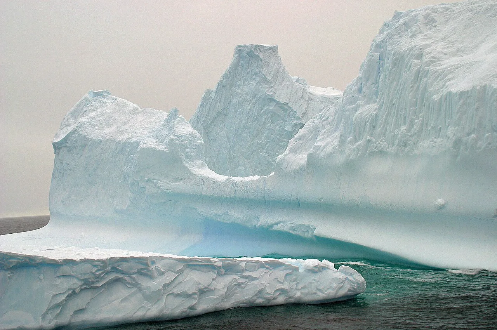
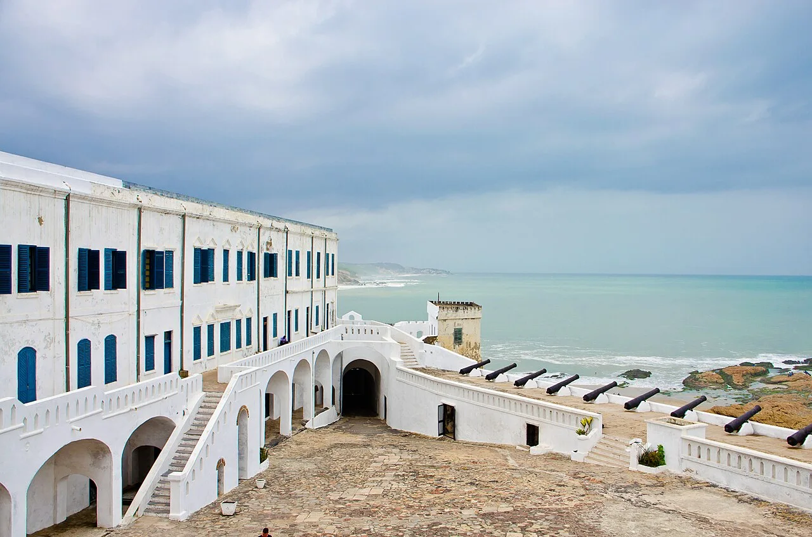
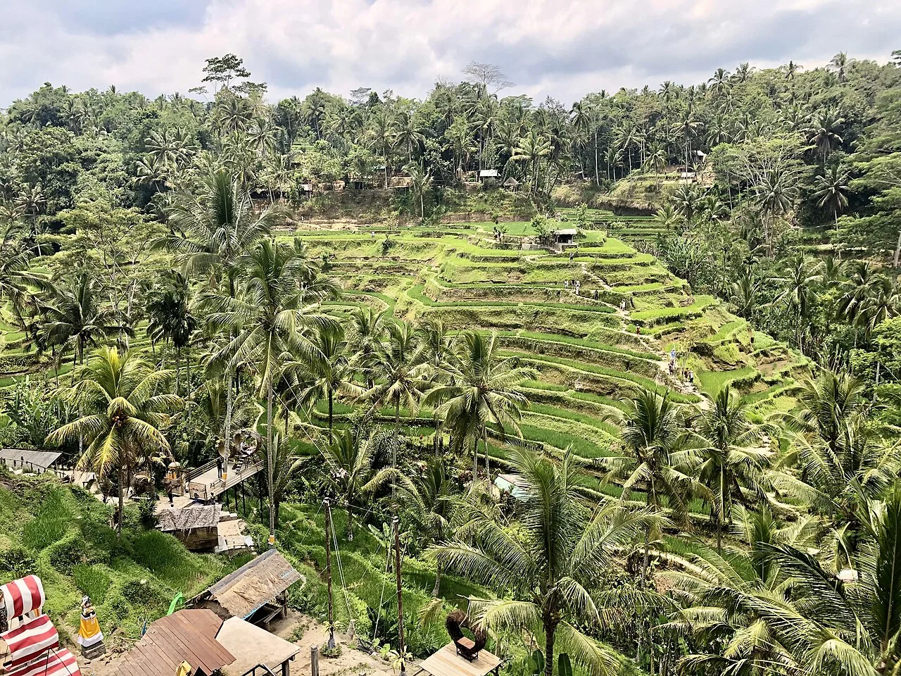
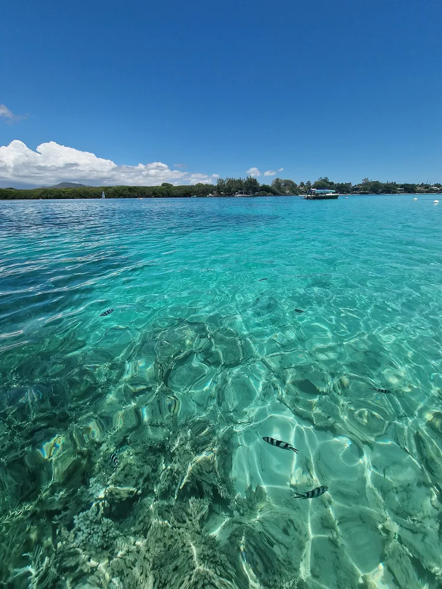
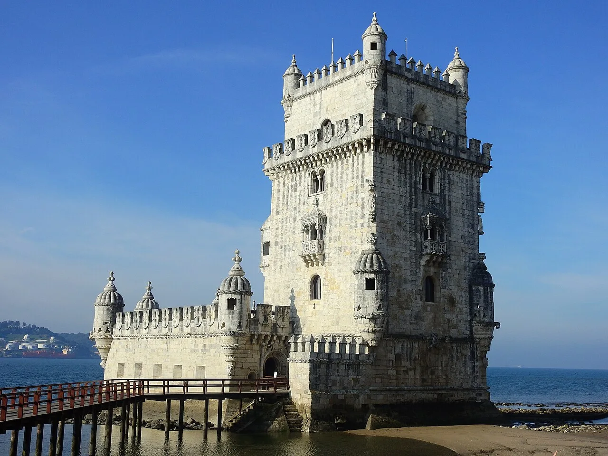
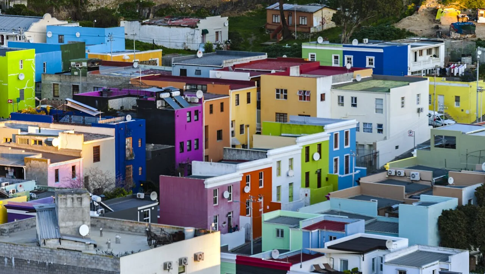
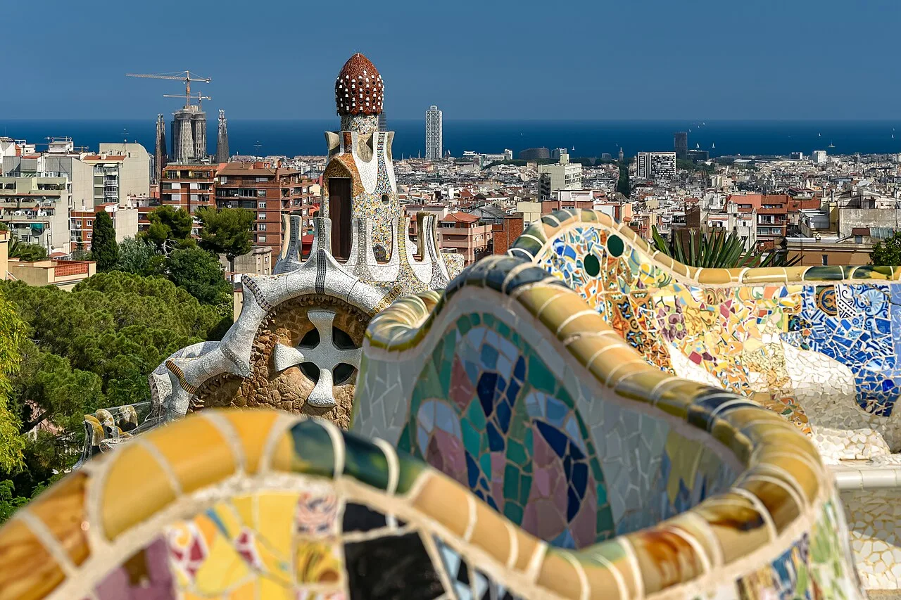
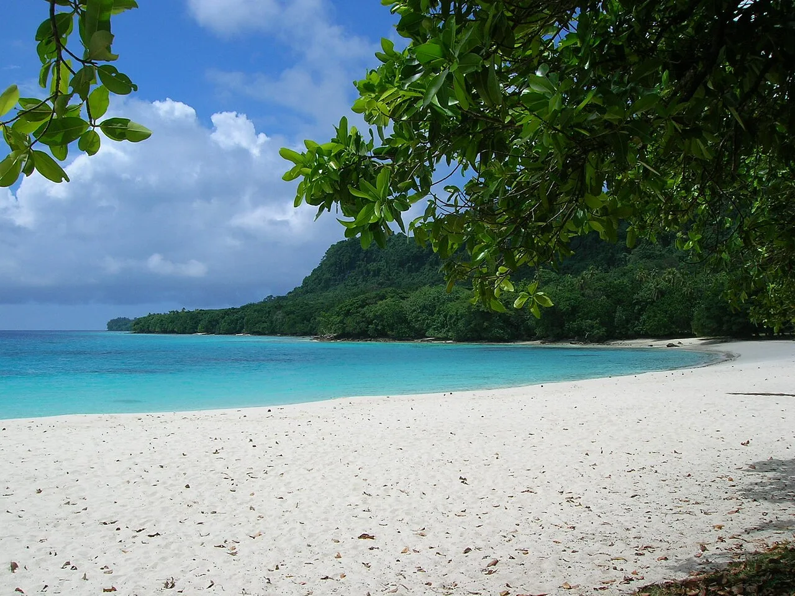
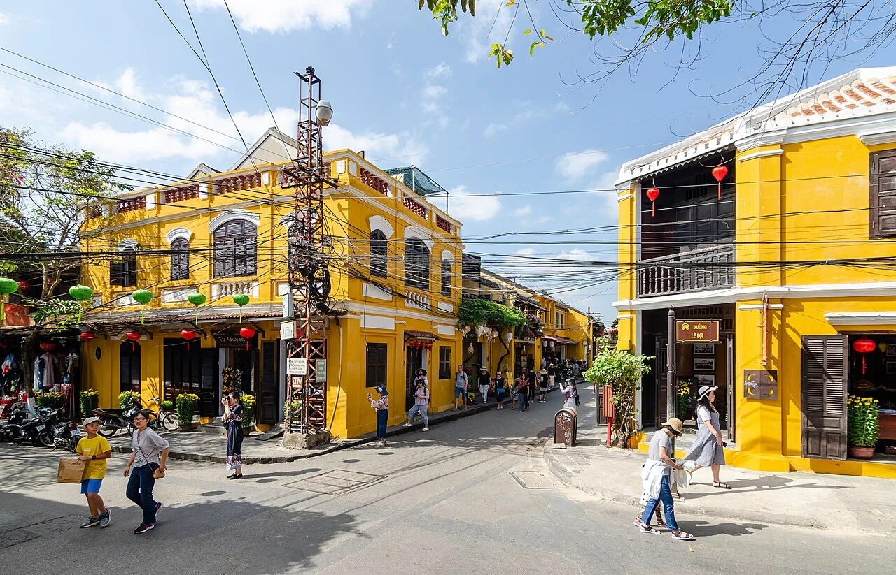

Antarctica
Antarctica
Five expedition stops among ice, wildlife and historic sites
5 expedition stops
31 countries · 7 continents · endless curiosity
Start with a place, follow an interest, or save somewhere for later. Every guide brings together local culture, food and a little adventure.

Antarctica
Five expedition stops among ice, wildlife and historic sites

South America
Tango streets, Andean vineyards and Patagonia's vast landscapes

Oceania
Harbour cities, coral reefs and ancient connections to Country

South America
Coastal cities, forest landscapes and the rhythms of samba

Africa
Volcanic mountains, coastal waterfalls and living royal heritage

North America
Historic riverfronts, striking skylines and room to roam

South America
Desert skies, Pacific culture and Patagonia's granite peaks

South America
Caribbean fortresses, mountain cities and many regional flavours

North America
Cloud forests, volcanic landscapes and a pura vida welcome

Oceania
Island reefs, garden paths and shared cultural traditions

Europe
Art-filled cities, Alpine slopes and a taste of regional France

Africa
Coastal history, forest canopies and the energy of Accra

Europe
Ancient stones, island coves and tables made for sharing

Asia
Mughal monuments, living bazaars and regional journeys

Asia
Island volcanoes, royal Java and remarkable temple landscapes

Europe
Ancient streets, Renaissance art and regional flavors

North America
Reggae roots, waterfall country and Caribbean flavor

Asia
Temple paths, city lights and regional flavours

Africa
Wildlife plains, Rift Valley scenery and Swahili coastal heritage

Africa
Island lagoons, forest trails and the flavours of Port Louis

North America
Ancient cities, vivid art and flavors rooted in place

Oceania
Māori heritage, alpine scenery and imaginative journeys

South America
Andean stonework, coastal flavours and living traditions

Europe
Atlantic light, tiled streets and a soundtrack of fado

Oceania
Volcanic landscapes and the living traditions of Fa'a Samoa

Africa
Cape mountains, wildlife country and stories that shape a nation

Europe
Gaudí's curves, Andalusian courtyards and lively local tables

Africa
Serengeti plains, volcanic highlands and Zanzibar's Swahili coast

Asia
Riverside temples, historic capitals and regional Thai cooking

North America
Big-city energy, vast landscapes and regional stories

Oceania
Blue holes, island coastlines and the traditions of kastom

Asia
Limestone waterways, living craft traditions and memorable street food
Try a different search or clear your filters to see every destination.